Was ist neu?
In byzz 11 ist unter der Haube mehr passiert als in den letzten drei Versionen zusammen.
Die folgenden Folien zeigen in vier Blöcken, was neu ist — Fundament, Bedienung, Funktionen und die byzz app.
Fundament: HTTP, 64 Bit, byzz Paro, Face-Scan.
Was sich in den Menüs Hilfe und Ansicht geändert hat.
Bildansichten, KI, 3D, Export, Sprachen.
Die App für Android, iOS, MacOS und Browser — löst ibyzz ab.
Die Präsentation ist in vier Blöcke geteilt. Die Reihenfolge hat einen Grund: Block 01 beschreibt das Fundament — HTTP, 64 Bit, byzz Paro, Face-Scan — und erklärt damit, warum das Übrige überhaupt möglich ist.
Block 02 sind die neuen Menüpunkte, Block 03 mit Abstand der größte: Bildansichten, KI, 3D, Export und Sprachen. Block 04 gehört der byzz app, die ibyzz ablöst.
Der Link unter der Überschrift führt auf diese Präsentation als PDF.
Änderungen, die man nicht sieht — aber alles verändern.
Der erste Block betrifft das Fundament: HTTP-Kommunikation, 64 Bit, das überarbeitete byzz Paro und die Anpassung an den Green X evo 21. Das ist der Teil, den man im Alltag nicht sieht — und genau deshalb der Teil, der am längsten hält.
Die Kommunikation läuft über ein Standardprotokoll statt über eine Microsoft-spezifische Implementierung.
Server und Clients sprechen in byzz 11 HTTP — ein Standardprotokoll statt einer Microsoft-spezifischen Implementierung. Der Server-Service ist damit ein Webservice; die Clients erreichen ihn über Schema und Port, beides einstellbar im Konfigurator.
Was bleibt: die Netzwerkfreigabe auf das Bildverzeichnis. Sie richtet der Konfigurator allerdings selbst ein.
Zwei Folgen daraus: Der Verkehr läuft sauberer durch Firewalls, und die byzz app kann überhaupt erst mit dem Server sprechen.
Die 4-GB-Grenze des 32-Bit-Adressraums fällt weg. Deutlich größere Datensätze lassen sich laden.
byzz 11 ist als 64-Bit-Anwendung gebaut. Eine 32-Bit-Anwendung kann nie mehr als 4 GB adressieren — an dieser Grenze sind große DVT-Datensätze und 3D-Modelle bisher gescheitert.
In der Praxis heißt das: Der Arbeitsspeicher im Rechner wird tatsächlich nutzbar. Wer viel mit DVT und Modelldaten arbeitet, merkt es zuerst.
Eine feste Obergrenze gibt es damit nicht mehr zu nennen — wie groß ein Datensatz werden darf, hängt ab jetzt am Rechner, nicht an byzz.
byzz Paro wurde komplett überarbeitet, und byzz besser auf Green X evo 21 abgestimmt.
Das Modul für Parodontal-Befunde wurde komplett überarbeitet und läuft dadurch deutlich performanter.
byzz 11 wurde auf das DVT-Gerät abgestimmt — insbesondere auf dessen Face-Scan.
byzz Paro — das Modul für Parodontal-Befunde — wurde komplett überarbeitet und läuft dadurch spürbar schneller. Wer den Paro-Status regelmäßig erhebt, merkt das bei jedem Aufruf.
Für den Green X evo 21 wurde byzz 11 angepasst, insbesondere für den Face-Scan des Geräts.
Beides sind Anpassungen im Bestand, keine neuen Module: Wer Paro und den Green X evo 21 bereits nutzt, arbeitet weiter wie bisher — nur schneller und ohne Sonderweg für den Face-Scan.
Ist ein unterstütztes Fremdprogramm installiert, steht es in byzz sofort zur Verfügung.
Fussen mit ScanFlex, Preparation, Scanabutment und ModelViewer · Shining 3D mit DentalLauncher.
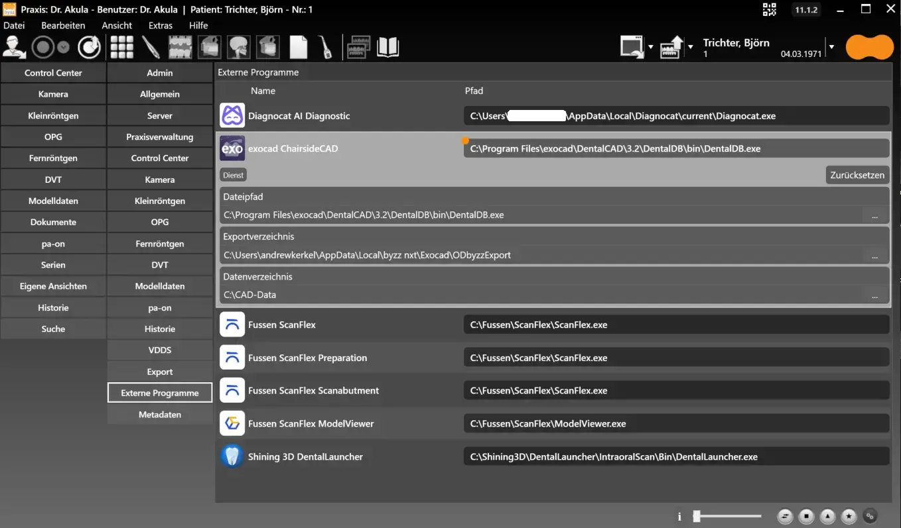
byzz 11 kennt die Standardpfade der unterstützten Fremdprogramme. Sie stehen unter Einstellungen → Externe Programme von vornherein in den Feldern — liegt ein Programm dort, wo sein Installationsprogramm es hinlegt, und das ist der Regelfall, ist es damit sofort nutzbar.
Vordefiniert sind Diagnocat, exocad, Fussen (ScanFlex, inklusive Preparation, Scanabutment und ModelViewer) und Shining 3D (DentalLauncher).
Weicht eine Installation ausnahmsweise vom Standardpfad ab, lässt sich der Eintrag im selben Dialog anpassen. Leer bleibt ein Feld dabei nie — es steht immer der Standardpfad darin. Vorher musste jeder Pfad von Hand gesucht und eingetragen werden, eine der häufigsten Rückfragen bei der Installation.
Einträge in den Menüs — mehr Informationen direkt aus byzz heraus.
Ab hier geht es um Dinge, die man sieht: vier neue Einträge in den Menüs — drei im Hilfe-Menü, einer im Menü Ansicht.
Klein im Umfang, aber alle vier führen zu etwas, das vorher nicht aus byzz heraus erreichbar war.
Alle drei führen aus byzz heraus.
Beide führen auf die orangedental-Webseite.
Zeigt die QR-Codes zu den Stores — App Store und Google Play.
Hilfe → Häufig gestellte Fragen führt auf die FAQ-Seite der orangedental-Webseite — der schnellste Weg zu einer Antwort, ohne zum Telefon zu greifen.
Hilfe → Webinare öffnet die orangedental-Webinare. Beide Einträge führen ins Web und brauchen deshalb einen Internet-Zugang am Rechner — an Behandlungsplätzen ohne Netz bleiben sie wirkungslos.
Hilfe → App für Mobilgeräte zeigt die QR-Codes für App Store und Google Play. Die beiden Codes auf dieser Folie sind dieselben — sie lassen sich direkt vom Bildschirm scannen, nichts abtippen und nichts suchen.
Datum und Uhrzeit werden auf Wunsch direkt in die Vorschaubilder eingeblendet.
Aufnahmezeitpunkte sind erkennbar, ohne jedes Bild einzeln zu öffnen — hilfreich bei Verlaufskontrollen und in der Dokumentation.
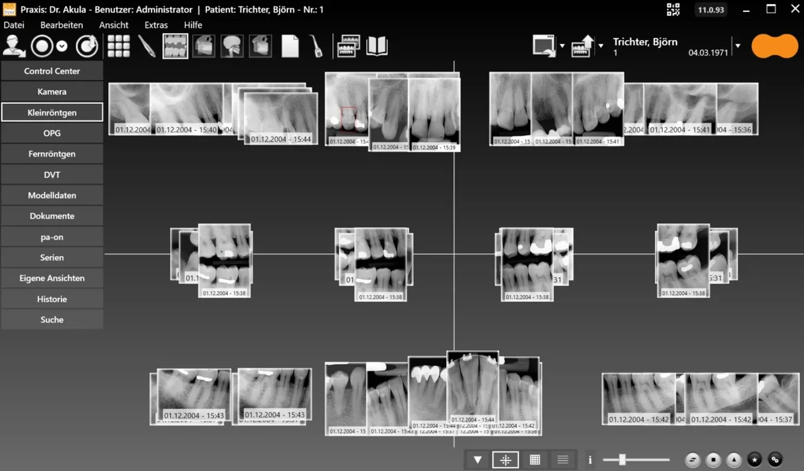
Ansicht → Zeige Thumbnail Erstellungsdatum und -zeit blendet Datum und Uhrzeit direkt in die Vorschaubilder ein. Der Menüpunkt ist ein Schalter — er lässt sich genauso wieder abschalten.
Man sieht auf einen Blick, wann eine Aufnahme entstanden ist, ohne jedes Bild einzeln zu öffnen. Das zahlt vor allem bei Verlaufskontrollen und in der Dokumentation ein — überall dort, wo Aufnahmen aus mehreren Jahren nebeneinander liegen.
Was in byzz dazugekommen ist.
Der größte Block der Präsentation. Ab hier geht es um das, was man direkt sieht und bedient.
Der Reihe nach: Bildansichten und Oberfläche, KI-gestützte Läsionserkennung, 3D-Modelldaten und DVT, der DVT-Export mit eigenem Betrachter, das dentaleyepad, Referenzsuche, Merging, der Konfigurator und die Sprachen.
Die Bildansicht lässt sich umschalten — je nachdem, ob man den Überblick, den Vergleich oder die Details braucht.
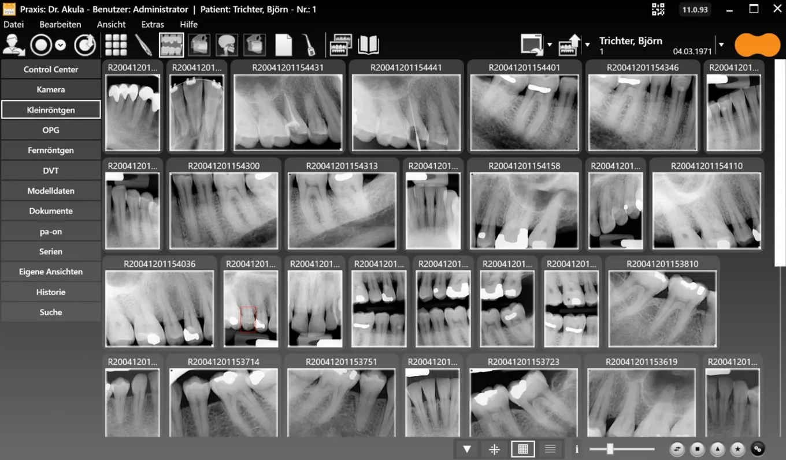
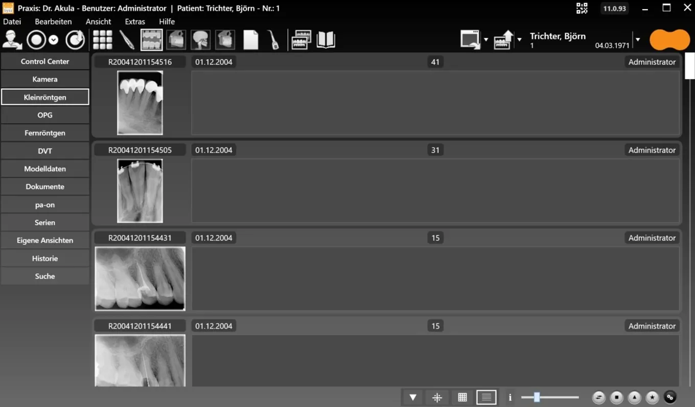
Dieselben Bilder in drei Anordnungen. Standard: anatomisch angeordnet, so wie der Behandler denkt. Raster: gleich große Kacheln, gut zum Suchen. Liste: mit Datum, Zahnnummer und Benutzer — gut für die Dokumentation.
Umgeschaltet wird unten rechts in der Fußleiste, ein Klick je Modus. Der orangefarbene Zeiger auf der Folie steht jeweils auf der aktiven Schaltfläche.
Welche Module in der linken Leiste erscheinen, legt die Praxis selbst fest — dazu viele kleinere Anpassungen im Look & Feel.
Die Ansichten lassen sich ein- und ausblenden — jede Praxis sieht nur, was sie wirklich nutzt.
Viele kleinere Anpassungen in der Oberfläche — keine einzelne davon ist groß, zusammen wirkt byzz 11 aufgeräumter.
Ein- und ausblendbar: Kamera · Kleinröntgen · OPG · Fernröntgen · DVT · Modelldaten · Dokumente · pa-on · Serien · Eigene Ansichten — Control Center, Historie und Suche bleiben immer sichtbar.
Die Module in der linken Leiste lassen sich einzeln ein- und ausblenden. Der Nutzen: Eine Praxis ohne DVT sieht auch keinen DVT-Eintrag — weniger Oberfläche, weniger Rückfragen.
Ausgenommen sind Control Center, Historie und Suche — die drei bleiben immer sichtbar. Die vollständige Aufzählung steht unten auf der Folie.
Das überarbeitete Look & Feel besteht aus vielen kleinen Anpassungen in der Oberfläche, keine einzelne davon ist groß. Eine Liste dazu gibt es nicht; der Unterschied zeigt sich im Gesamteindruck.
Eine KI von Nostic wertet die OPG-Aufnahme aus und markiert potenzielle Läsionen im Bild.
Je Fund: Zahnnummer, Klassifikation und Konfidenz in Prozent. Die Schwelle blendet schwache Treffer aus.
Die Befundung bleibt beim Behandler.
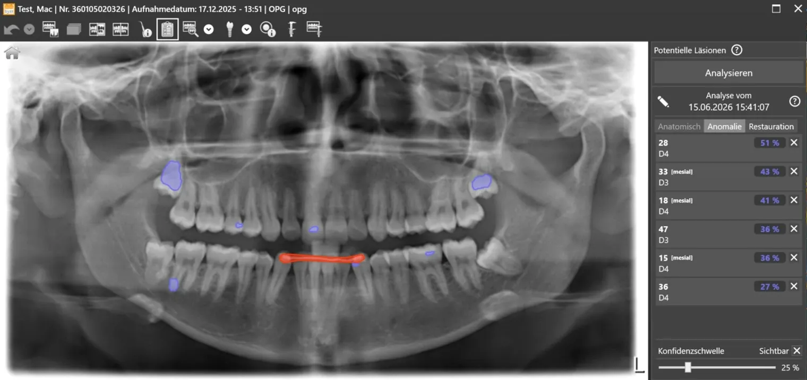
Die OPG-Aufnahme wird von einer KI von Nostic ausgewertet. Rechts erscheint die Liste potenzieller Läsionen mit Zahnnummer, Klassifikation und Konfidenz in Prozent; die Fundstellen sind im Bild farbig markiert.
Über die Konfidenzschwelle lässt sich einstellen, ab welcher Sicherheit ein Treffer angezeigt wird — schwache Treffer verschwinden damit aus der Liste. Die Reiter Anatomisch, Anomalie und Restauration trennen die Fundarten.
Wichtig zur Einordnung: Das ist eine Zweitmeinung, keine Diagnose. Befund und Verantwortung bleiben beim Behandler.
Die Modelldaten werden im Model-Viewer frei im Raum gedreht und aus jeder Richtung betrachtet.
Unterstützte Dateiformate. Ober- und Unterkiefer einzeln oder zusammen in Okklusion.
Modelldaten aus dem Intraoralscan lassen sich im Model-Viewer frei drehen — Ober- und Unterkiefer einzeln oder zusammen in Okklusion.
Das Video auf der Folie läuft in Schleife und zeigt genau diese Drehbewegung. Am stärksten wirkt das im Patientengespräch — dort erklärt sich das Modell von selbst.
Gelesen werden die Dateiformate STL, OBJ und PLY. Zu weiteren Formaten liegt nichts vor.
Die drei Schnittebenen und die volumetrische 3D-Ansicht liegen nebeneinander; jede Ansicht lässt sich einzeln groß schalten.
byzz als Standard-DVT-Viewer.
In den DVT-Einstellungen wird der byzz-DVT-Viewer als primärer 3D-Viewer gesetzt — danach öffnen DVT-Aufnahmen direkt in diesem Fenster.
Axial, sagittal, coronal und das Volumen liegen zusammen auf einem Bild; jede der vier Ansichten lässt sich einzeln groß schalten und wieder zurückstellen.
Für das einfache Betrachten einer DVT-Aufnahme wird damit keine zusätzliche Software mehr benötigt.
Erweiterte Einstellungen und eine neue Schnittstelle.
Die Segmentation Engine lässt sich in den DVT-Einstellungen ein- und ausschalten — je nachdem, ob die Praxis sie braucht.
Die Schnittstelle ist in byzz 11 integriert.
Zwei Einstellungen rund um DVT und 3D. Die Ez3D-i Segmentation Engine ist ab byzz 11 in den DVT-Einstellungen ein- und ausschaltbar — praktisch, wenn eine Praxis sie nicht nutzt oder die Leistung am Arbeitsplatz knapp ist.
Die 3D-Slida-Schnittstelle ist eingebaut, aber noch nicht getestet: vorhanden, Freigabe steht aus. Zu Funktionsumfang und Termin liegt bislang nichts fest.
Der Export legt die DVT-Daten und ein Betrachterprogramm zusammen ab. Der Empfänger braucht kein byzz.
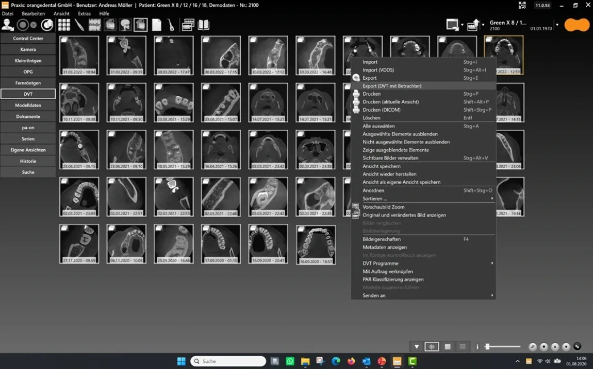
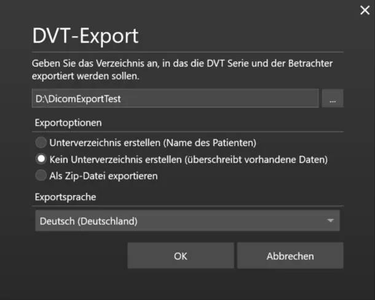
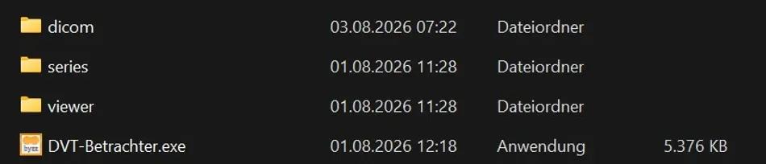
Der Export in drei Schritten. Aufrufen: im Kontextmenü der DVT-Liste steht der neue Eintrag Export (DVT mit Betrachter) direkt unter dem normalen Export.
Ziel wählen: Zielverzeichnis, dazu drei Optionen — Unterverzeichnis mit Patientenname, kein Unterverzeichnis (überschreibt vorhandene Daten) oder Zip-Datei. Die Sprache des Betrachters lässt sich separat einstellen, was zählt, wenn der Empfänger im Ausland sitzt.
Der entscheidende Schritt ist der dritte: im Zielordner liegen dicom, series, viewer und die DVT-Betrachter.exe. Überweiser, Labor und Patient brauchen kein byzz, um das DVT anzusehen.
Bisher lief die Anbindung über eine zusätzliche Software. Die entfällt in byzz 11.
Ein Installationsschritt weniger beim Einrichten.
Eine Fehlerquelle weniger im laufenden Betrieb.
Aufnahmen landen direkt beim richtigen Patienten.
Das dentaleyepad ist in byzz 11 direkt angebunden. Bisher brauchte es dafür eine weitere Software auf dem Rechner — die fällt weg.
In der Praxis heißt das: ein Installationsschritt weniger bei der Einrichtung und ein Programm weniger, das im Betrieb ausfallen kann. Die Aufnahmen landen direkt beim geöffneten Patienten.
Der Ablauf am Behandlungsplatz bleibt derselbe wie bisher: Aufnahme machen, Bild ist da — nur ohne den Zwischenschritt im Schaubild rechts.
Die Referenzsuche wird bei jedem Aufruf neu ausgeführt. Auch bei geändertem Datenbestand findet sie die richtigen Bilder.
Keine eingefrorene Liste — die Treffer zeigen den heutigen Stand.
Neue Fälle sind automatisch dabei, wenn sie den Kriterien entsprechen.
Die Referenzsuche ist keine eingefrorene Liste: Was einmal als Suche gespeichert wurde, läuft bei jedem Öffnen neu gegen den aktuellen Bestand.
Der Punkt, der zählt: Auch wenn sich der Datenbestand geändert hat, kommen die richtigen Bilder. Neue Fälle, die den Kriterien entsprechen, stehen automatisch mit drin.
Das Schaubild rechts stellt beides gegenüber: oben die einmal ausgeführte, gespeicherte Liste mit dem Stand von damals — unten die Referenzsuche, die bei jedem Aufruf den heutigen Stand liefert.
Bestände zusammenführen — aus einer zweiten byzz-Datenbank oder aus einem fremden System.
Zwei byzz-Datenbanken lassen sich zusammenführen. Thema bei Praxisübernahmen, Zusammenlegungen und Standortfusionen.
Bilddaten auch aus DICOMDIR, PACS oder aus einer fremden Bildverwaltung (BVS) übernehmen.
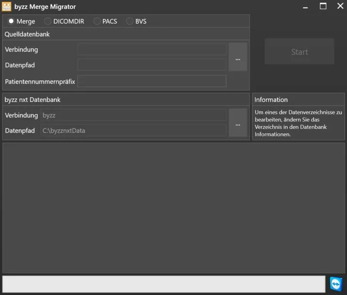
Datenbank-Merging führt zwei byzz-Datenbanken zusammen. Das Thema kommt bei Praxisübernahmen, Zusammenlegungen und Standortfusionen — Bestände müssen nicht nebeneinander weiterlaufen.
Derselbe Weg holt Bilddaten auch von außen herein: DICOMDIR, PACS und BVS — also Bildverwaltungen anderer Hersteller mit eigener Datenbank.
Merging ist ein Projekt, kein Klick — Umfang und Ablauf werden vorher mit dem orangedental-Support abgestimmt. Wie vollständig eine Übernahme gelingt, hängt am Quellsystem.
Lizenzierung, Aktivierung und Patching laufen zusammen im byzz Konfigurator — nicht mehr über drei getrennte Wege.
Module und Laufzeiten sind an einer Stelle sichtbar und änderbar.
Vorgefertigte Lizenzen können auch über die Aktivierung freigeschaltet werden.
Updates werden nur über den Konfigurator eingespielt.
Lizenzierung, Aktivierung und Patching liegen in byzz 11 im selben Werkzeug — dem byzz Konfigurator. Vorher führte jede dieser Aufgaben über einen eigenen Weg.
Der Konfigurator läuft auf dem Server, nicht am einzelnen Arbeitsplatz. Updates werden ausschließlich über ihn eingespielt.
Für weitere Märkte und mehr Kunden.
Unabhängig davon lässt sich beim DVT-Export die Exportsprache eigens wählen.
byzz 11 kommt in acht Sprachen: Dänisch, Deutsch, Englisch, Französisch, Italienisch, Portugiesisch, Russisch und Spanisch.
Die Oberfläche lässt sich pro Arbeitsplatz umstellen — das zählt für Standorte im Ausland ebenso wie für mehrsprachige Teams in größeren Praxen und MVZ.
Davon zu unterscheiden: Beim DVT-Export gibt es eine eigene Sprachauswahl, die nur den Betrachter beim Empfänger betrifft.
Ein neues Kapitel in byzz — und eines, das der Kunde in den Händen halten kann.
Bis hierhin ging es um Fundament und Arbeitsplatz. Jetzt kommt das Stück, das aus der Praxis herausgeht — aufs Tablet, aufs Handy, in den Browser.
Die byzz app löst ibyzz ab und ist der weitreichendste Punkt dieser Version. Die folgenden Folien gehen sie der Reihe nach durch: Einstieg, Login, Patientenliste, Medien, Einstellungen, DVT-Viewer und die eingebauten Betrachter.
Dieselbe App auf Android, iOS, MacOS und im Browser. Die FTP-Installation entfällt — die App spricht direkt mit dem Server-Service.
ibyzz ist Geschichte. Die byzz app ist der Nachfolger — dieselbe App für Android, iOS, MacOS und Browser.
Einen Server-Service gab es auch in byzz 10 schon. Der aufwendige Teil war die FTP-Installation, einmal pro Gerät. Genau die entfällt, weil die App über HTTP direkt mit dem Server-Service spricht — die Umstellung aus Abschnitt 01.
Das Schaubild rechts zeigt beide Wege übereinander: oben der Aufwand aus ibyzz, unten der direkte Weg in byzz 11.
Direktzugriff auf den Server-Service
über den Browser
http://<servername>:8100
Browser-App starten — läuft sofort, es wird nichts installiert.
Desktop-App laden — der Download für den festen Arbeitsplatz.
Oben die Version, unten Kontakt und TeamViewer für den Support.
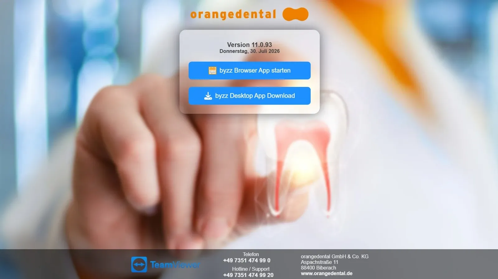
Der Einstieg in einem Satz: Adresse aufrufen, Browser-App starten, fertig. Kein Setup, keine Rechte, kein IT-Termin nötig.
Die Desktop-App bietet denselben Funktionsumfang für Arbeitsplätze, an denen dauerhaft damit gearbeitet wird.
Unten auf der Seite stehen Kontakt und TeamViewer-Zugang — Hilfe ist also von derselben Stelle aus erreichbar.
Anmeldung wie gewohnt.
Unten stehen byzz-Version und App-Version nebeneinander — die erste Frage im Support ist damit beantwortet.
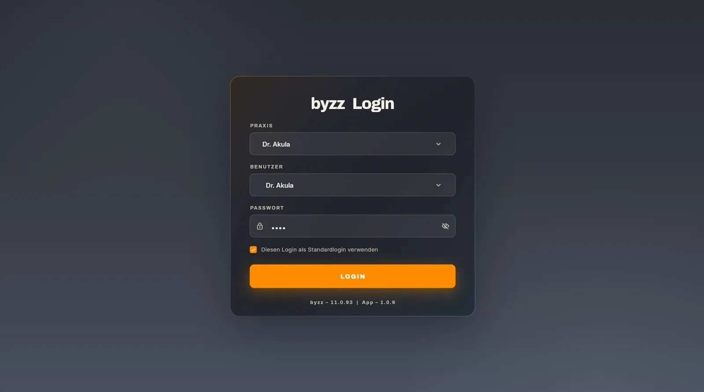
Der Standardlogin lässt sich merken — am Tablet im Behandlungszimmer muss damit nicht dreimal täglich eine Praxiskennung getippt werden.
Unten im Bild stehen zwei Versionsnummern. Genau diese beiden Zahlen werden bei einem Support-Fall benötigt.
Übersichtliche Auswahl mit Suchfeld und alphabetischem Schnellzugriff.
Dasselbe Bedienmuster — wer es einmal kennt, findet sich überall zurecht.
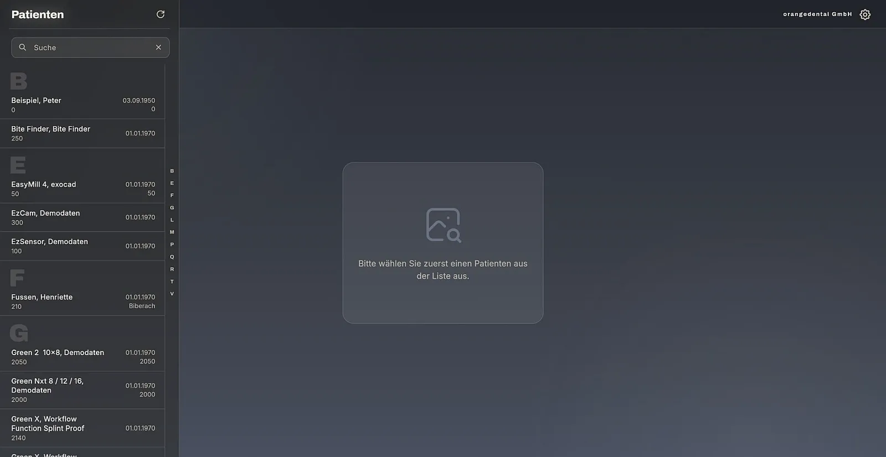
Die Patientenliste ist der Einstieg in alles Weitere. Suchen oder springen — mehr Wege gibt es nicht, und mehr braucht es auch nicht.
Der Alphabet-Streifen am Rand ist für die Bedienung mit dem Daumen gemacht, nicht für die Maus — er zeigt seinen Nutzen erst am Tablet.
Innerhalb eines Patienten liegen die Bilder in den entsprechenden Kategorien.
Jede Kachel zeigt das Aufnahmedatum und ein Info-Symbol.
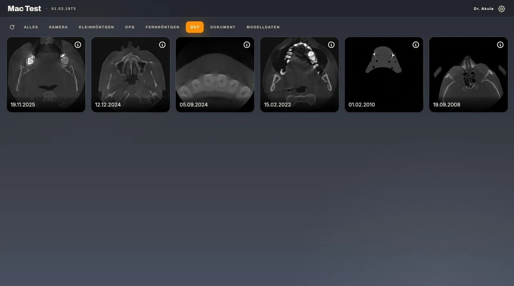
Die Reiter sind die einzige Navigation innerhalb eines Patienten: ein Reiter je Medientyp, links im Bild der ausgewählte.
Damit entfällt das Scrollen durch alles, was je aufgenommen wurde. Wer das OPG sucht, tippt auf OPG.
Das Aufnahmedatum steht an jeder Kachel — das ist beim Vergleich alter und neuer Aufnahmen der entscheidende Wert.
Optionen zu Funktionalität, Darstellung und Sprache.
Mehrere Farbschemata zur Auswahl, dazu Schalter für Patientenliste, Login und Navigation.
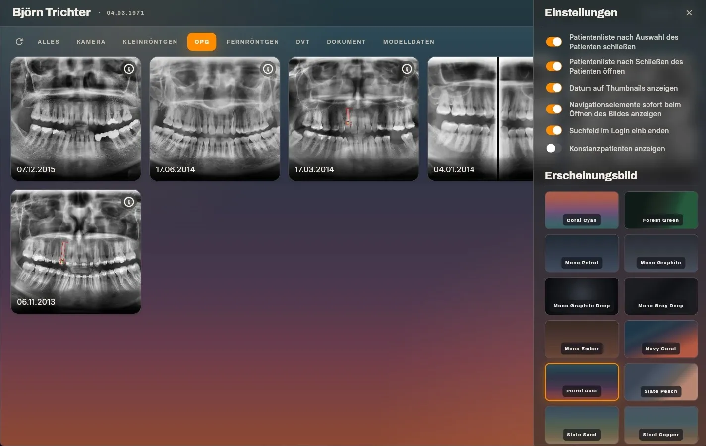
Die Einstellungen sitzen im Zahnrad rechts oben und gelten je Gerät — jeder richtet sich seine Ansicht selbst ein, ohne dass es andere betrifft.
Oben Schalter für die Funktionalität: ob sich die Patientenliste nach der Auswahl schließt, ob das Datum an den Vorschaubildern steht, ob das Suchfeld im Login erscheint.
Darunter das Erscheinungsbild mit mehreren Farbschemata zur Auswahl, dazu die Sprache. Ein Wechsel wirkt sofort auf die gesamte Oberfläche — vorgegeben ist hier nichts.
Der DVT-Viewer auch in der App: konfigurierbare MPR/3D-Ansicht.
Die Fadenkreuze lassen sich verschieben — die Schnittebenen folgen.
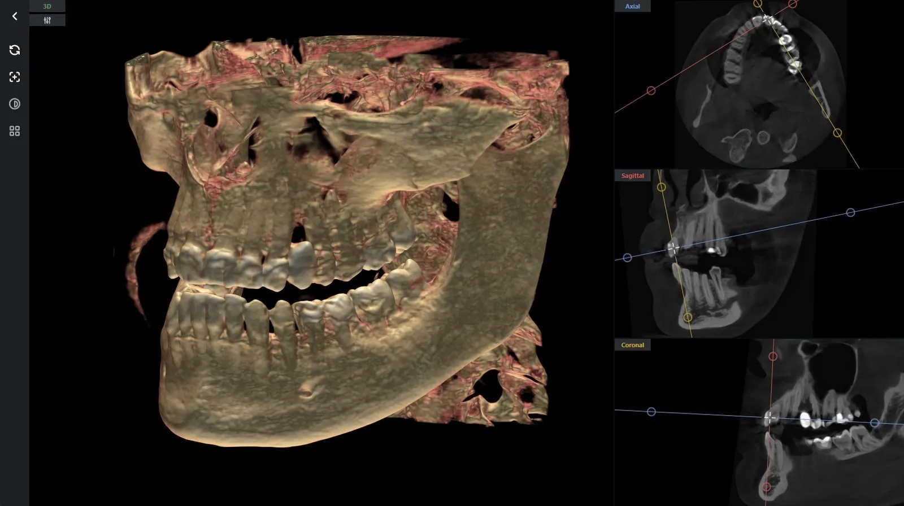
Ein vollwertiger DVT-Viewer auf dem Tablet — kein Standbild und kein abgespeckter Betrachter.
Wird das Fadenkreuz mit dem Finger gezogen, laufen die beiden anderen Ebenen mit. Axial, sagittal und coronal bleiben dabei immer auf derselben Stelle.
Damit bleibt der Behandler am Stuhl und zeigt dem Patienten die Aufnahme dort, wo das Gespräch stattfindet.
Für jeden Medientyp bringt die byzz app den passenden Betrachter mit.
3D-Rendering und drei Schnittebenen.
Modelldaten am Gerät ansehen.
Dokumente in der App öffnen.
Videos in der App abspielen.
Aufnahmen mit der Gerätekamera.
Reiter KameraZusammenfassung des Abschnitts: ein Programm statt fünf. Was in der Akte liegt, lässt sich in der App auch öffnen — ohne Umweg über ein anderes Werkzeug.
Vier Betrachter: DVT, Modelldaten, PDF und Video. Die Kamera-Aufnahme ist kein Betrachter, sondern der Weg hinein — sie sitzt im Reiter Kamera.
Der DVT-Viewer ist davon der weitreichendste Punkt, die übrigen drei sind die Selbstverständlichkeit, die eine App zum Arbeitsgerät macht.
Zu PDF-Viewer, Video-Player und Kamera-Aufnahme liegen bislang keine Einzelheiten vor.
Mit HTTP und 64 Bit steht byzz 11 auf einer Basis, die auch morgen noch trägt.
Aktuelle Geräte und Fremdprogramme sind direkt angebunden — ohne Zwischensoftware.
Die byzz app läuft auf Android, iOS, MacOS und im Browser.
Für einfaches Betrachten keine extra Software mehr benötigt.
Der Export bringt seinen eigenen Betrachter mit — ohne Installation beim Empfänger.
Nostic markiert potentielle Läsionen in Kleinröntgen und OPGs.
Sechs Punkte, die einen deutlichen Unterschied zu den Vorgängerversionen ausmachen — zusammengefasst auf einer Folie.
Die Reihenfolge geht von unten nach oben: Zuunterst das Fundament aus HTTP und 64 Bit, darauf die engere Anbindung an Geräte und Fremdprogramme, darauf die byzz app — dieselbe Anwendung auf Android, iOS, MacOS und im Browser.
Dazu der DVT-Viewer, der für das einfache Betrachten keine Zusatzsoftware mehr benötigt, und ein DVT-Export, der seinen eigenen Betrachter mitbringt.
Zur KI-Unterstützung durch Nostic gehört eine Einschränkung: sie markiert potenzielle Läsionen, befundet wird weiterhin selbst. Es ist eine Zweitmeinung, keine Diagnose.
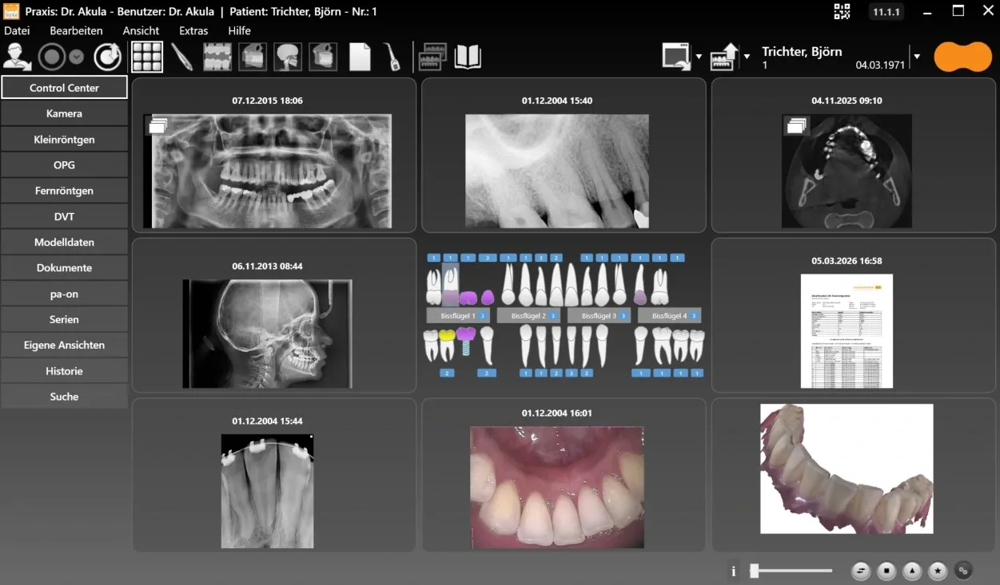
Wir freuen uns, wenn byzz 11 Ihren Praxisalltag leichter macht.
Im Bild das byzz Control Center — die Übersicht, in der alle Aufnahmen eines Patienten nebeneinander liegen: OPG, Kleinröntgen, DVT, Fernröntgen, Bissflügel, Kamera, Modelldaten und Dokumente. Dort läuft zusammen, was auf den vorherigen Folien einzeln zu sehen war.
Zum Nachschlagen führen zwei Wege direkt aus byzz heraus: Hilfe → Häufig gestellte Fragen und Hilfe → Webinare. Beide Menüpunkte sind selbst Teil von byzz 11.
Diese Präsentation als PDF gibt es über den Link auf Folie 2.
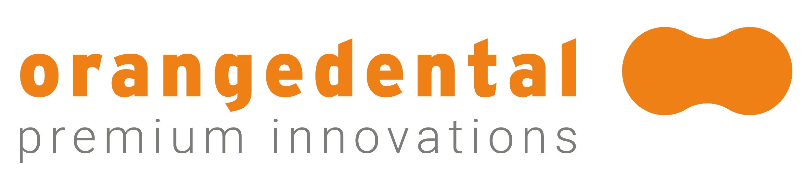